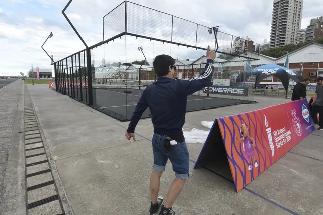

RUMBO A SEPTIEMBRE
Rosario ya palpita los Juegos Suramericanos: el tour del evento llega a la costa central
Con actividades deportivas, stands interactivos y shows en vivo, la previa de la cita internacional se instala este fin de semana en la zona del Monumento. La entrada es libre y gratuita.

La cuenta regresiva para los XIII Juegos Suramericanos Santa Fe 2026 se acelera y la ciudad comienza a vivir el clima de la gran cita deportiva. Este sábado y domingo, el "Tour Suramericano" desembarcará en la costa central de Rosario, ofreciendo un anticipo de lo que se vivirá en septiembre.
El evento, que se desarrollará en el Parque Nacional a la Bandera, contará con exhibiciones de distintas disciplinas, espacios para que el público interactúe con atletas de alto rendimiento y stands informativos sobre el evento que transformará la dinámica de la ciudad.
El rol clave de los voluntarios
Durante la jornada también habrá puntos de asesoramiento para quienes deseen sumarse al equipo de colaboración. El comité organizador destacó que el entusiasmo de los residentes es fundamental para garantizar la hospitalidad y la logística durante las semanas de competencia, recibiendo a miles de atletas de toda Sudamérica.
Las autoridades locales destacaron que esta activación busca que todos los rosarinos se sientan parte del evento internacional. "Queremos que la ciudad entera respire deporte. Los Juegos no son solo de los atletas, sino de toda la comunidad que los recibe", señalaron desde la organización.